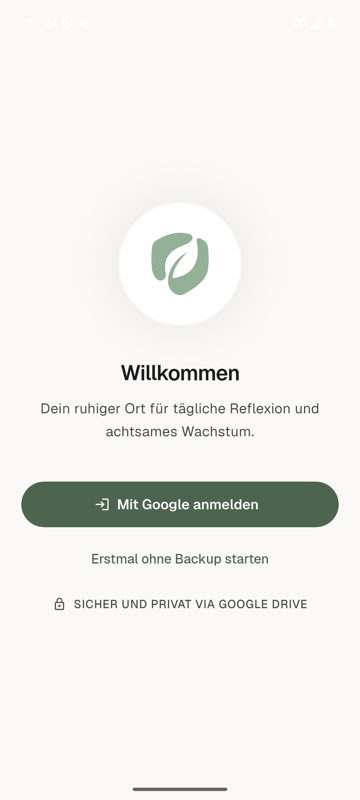
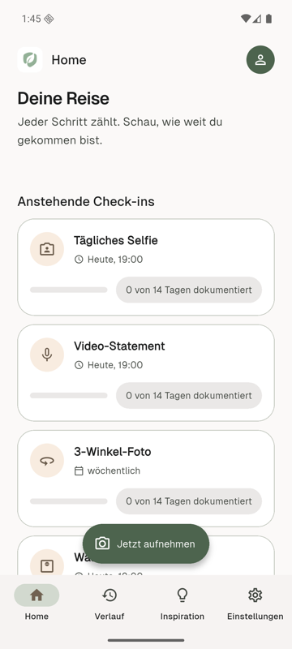
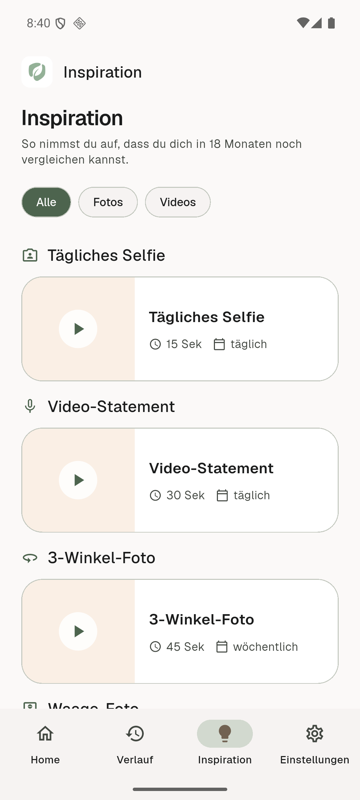
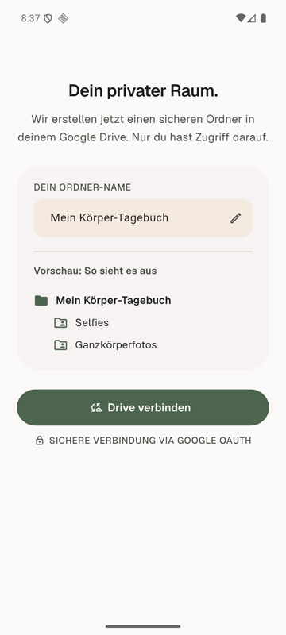

Deine Transformation.
Dein Tagebuch.
Dokumentiere deine Körper-Transformation mit täglichen Foto- und Video-Check-ins – konsistent aufgenommen dank Vorlagen und Ausrichtungshilfe, automatisch gesichert in deinem eigenen Google Drive. Nie in der Handy-Galerie, nie auf fremden Servern.
🌱 Kommt bald für Android



Wie ein hochwertiges Tagebuch.
Nicht wie eine Diät-App.
Erinnert dich zuverlässig
Jeden Abend eine sanfte Erinnerung. Ein Tipp – und die Kamera ist offen, mit der richtigen Vorlage.
Immer vergleichbar
Silhouetten-Overlay und Ghost-Bild deiner letzten Aufnahme: Auch nach 18 Monaten passen deine Fotos noch übereinander.
Backup in DEINEM Drive
Jede Aufnahme landet automatisch strukturiert in deinem eigenen Google Drive – Ordner pro Check-in-Typ und Monat.
Nie in der Galerie
Deine Aufnahmen erscheinen niemals in der Handy-Galerie. Zeig anderen Fotos, ohne an dein Tagebuch zu denken.
Vorlagen-Bibliothek
Kuratierte Video-Vorlagen zum Nachmachen: Selfie, 3-Winkel-Shoot, Video-Statement, Waage – mit Anleitung und empfohlenem Rhythmus.
Ehrlicher Fortschritt
Sichtbare Veränderung braucht 3–4 Wochen. Die App sagt dir das ehrlich – statt dich mit Tages-Rauschen zu demotivieren.
Ratgeber: ehrlich dokumentieren
- Checkliste für Tag 1Was du am ersten Tag festhalten musst, damit dir in 6 Monaten nichts fehlt.
- Wann sieht man Erfolge beim Abnehmen?Die realistische Zeitleiste von Woche 1 bis 12 – mit Zahlen aus Studien.
- Wie oft wiegen beim Abnehmen?Was Studien sagen – und warum nur der Wochentrend zählt, nicht der Tageswert.
- Progress-Fotos richtig machenDie 7 Regeln für Bilder, die du nach 12 Monaten noch fair vergleichen kannst.
Dein Tagebuch gehört nur dir.
Journey Journal speichert deine Aufnahmen ausschließlich im privaten
App-Speicher deines Handys und in deinem eigenen Google Drive
(drive.file-Zugriff: die App sieht nur Dateien, die sie
selbst angelegt hat). Kein eigener Server, kein Zwischenspeichern,
kein Zugriff durch andere.